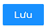

Sau khi đăng nhập với quyền Quản trị viên, hệ thống sẽ chuyển tới trang Quản ký chất hóa học.Quản trị viên sẽ chọn Đăng ký thực hành tại menu.
Sau khi chuyển tới trang thành công, thông tin danh sách các đơn đăng ký thực hành sẽ được hiện
ra:

Mỗi bản ghi sẽ thể hiện thông tin cơ bản của đơn đăng ký thực hành đó bao gồm Thời gian,
lớp, giáo viên hướng dẫn, khung giờ, phòng thực hành, nội dung, người duyệt, trạng thái đơn, lý do từ chối
Sau khi đăng nhập với quyền Giáo viên, hệ thống sẽ chuyển tới trang Quản ký chất hóa học.Giáo viên sẽ chọn Đăng ký thực hành tại menu.
Di chuột vào nút Đăng ký
 ở góc trái phía trên màn hình danh sách, cửa số Đăng ký sẽ hiện ra
ở góc trái phía trên màn hình danh sách, cửa số Đăng ký sẽ hiện ra
Đăng ký thực hành hiện ra, nhập những thông tin cần thiết liên quan đến lịch thực hành ở trong cửa sổ đó. Các trường Lớp, Phòng, Người quản lý là những trường bắt buộc nhập.
Sau đó ấn nút  để lưu thông tin đã nhập

Nếu bỏ qua một trong số những trường đó, hệ thống sẽ hiện ra cảnh báo:

Sau khi đăng ký thành công. Hệ thống sẽ thông báo cho quản trị viên để xác nhận lịch.

Tại màn hình danh sách Đăng ký thực hành, giáo viên di chuột tới một bản ghi bất kì, sau đó nhấn đúp chuột, cửa sổ Xem thông tin và chỉnh sửa đơn đăng ký thực hành sẽ hiện ra, Giáo viên có thể xem
và chỉnh sửa thông tin đơn đăng ký thực hành tại đây.

Sau đó ấn nút để lưu thông tin đã nhập
Tại màn hình danh sách đơn đăng ký, di chuột tới một bản ghi bất kì, sau đó nhấn chuột trái, 2 nút  hiện ra.
hiện ra.
hiện ra.
Quản trị viên sẽ nhấn vào Duyệt hoặc Từ chối cho bản ghi đã chọn.

Nếu từ chối màn hình từ chối đăng lý sẽ hiện ra. Quản trị viên nhập lý do từ chối và nhấn nút Từ chối

Trạng thái đơn sẽ được thay đổi.Thông báo sẽ thông báo cho giáo viên đăng ký.